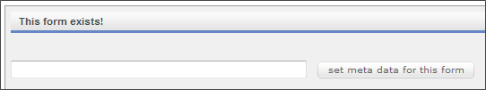
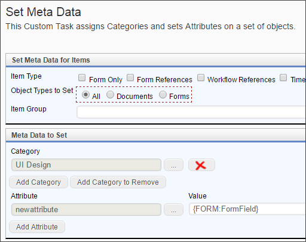
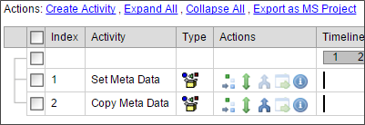
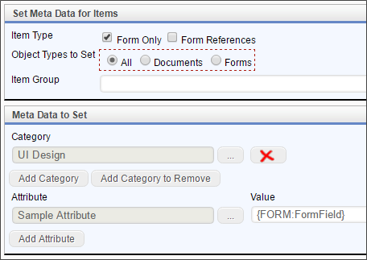
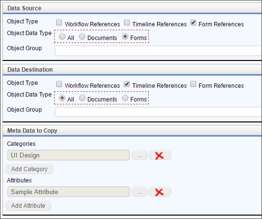

There are two different ways to use the Process Director Set Meta Data Custom task: on a Form or in a process.
This is a section of a Form. In order to add Meta Data to an object, the Form must already been submitted. The submission of the form (the OK button) is where the form is actually created and a record of it kept, including its Object ID, and we need the Object ID in order to associate an object with a Meta Data category.

This is a simple section with a single text field and a button that is going to kick off the Set Meta Data Custom Task. In the Custom Task Event Mapping tab on the Form, you can set the button's event to run the Set Meta Data Custom task.
This is the custom task configuration used to set the attribute “newattribute” to a form field value.

It’s important to understand the “Item Type” and “Item Group” options and be aware that if you don’t select Workflow or Timeline references, that you may not be able to automatically associate other forms and documents later in the process.
In Workflows, there is a set Meta Data workflow task, and in Process Timelines, there is a Custom Task activity that you can set to use the Set Meta Data Custom task as the Custom task for the activity. The configuration for both is the same as shown here, for the form. For more information on the Set Meta Data Custom Task, refer to the task's documentation in the Custom Tasks Reference Guide.
In any Timeline or Workflow, you can use the Set Meta Data and Copy Meta Data Custom Tasks. The process for each type of process is similar, and the custom task configuration is the same.
Once a form has been submitted, the Meta Data in the form is accessible from the process. In the examples below, we will see both the Set Meta Data and the Copy Meta Data Custom Tasks in use.

In this sample, the Set Meta Data Custom Task is run as the first activity when the Form is submitted.

In this case, we've configured the Set Meta Data Custom task to set the Meta Data for the Form only, and set the Category as UI Design. For the Attribute, the task is configured to set the attribute to the value of a notional Form Field.
Now that the Meta Data for the Form has been set, we can use the Copy Meta Data Custom Task to apply those Meta Data Value to other objects in the process.

In the example above, The Copy Meta Data task is copying the Meta Data from the Form (Data Source) to all of the Timeline references (Data Destination) in the process. We have configured the task to copy both the UI Design Category and Sample Attribute value to all of the Timeline references. As a result, any object attached to the Timeline (file attachments, for example) will now share the same Meta Data category and attribute with the Form.